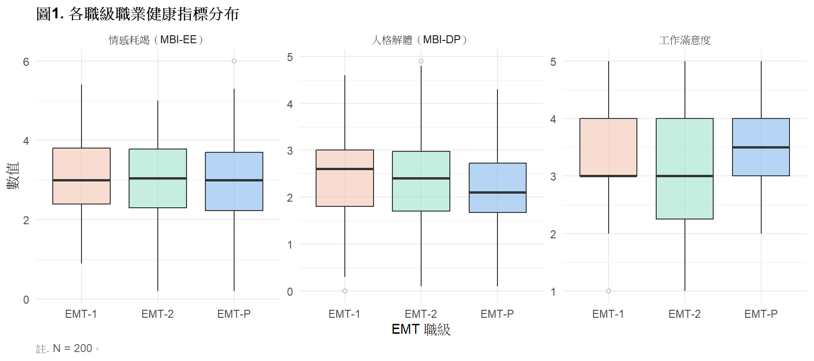
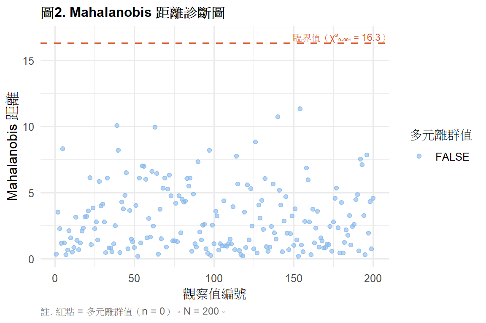

library(tidyverse)
library(gt)
library(car)
library(heplots)
# install.packages("heplots")
ems <- read.csv("data/ems_main.csv",
fileEncoding = "UTF-8",
stringsAsFactors = FALSE)
ems$gender <- factor(ems$gender,
levels = c("男", "女"))
ems$level <- factor(ems$level,
levels = c("EMT-1", "EMT-2", "EMT-P"))
ems$district <- factor(ems$district,
levels = c("北部", "中部", "南部", "東部"))
ems$shift <- factor(ems$shift,
levels = c("日班為主", "夜班為主", "輪班"))第13週：多變量變異數分析
MANOVA、假設檢查、效果量、APA 報告
本週學習目標
- 理解 MANOVA 的統計邏輯與適用時機
- 正確執行 MANOVA 並解讀多變量統計量
- 執行後續的單變量 ANOVA 分析
- 製作 APA 格式結果表格與報告句
統計方法對照表（本週位置）
| X 自變項 | Y 依變項 | 方法 |
|---|---|---|
| 類別（2組以上） | 連續（1個） | ANOVA（第7週） |
| 類別（2組以上） | 連續（多個） | MANOVA |
註釋
為什麼不對每個 Y 分別做 ANOVA？
若有 5 個依變項，各做 α = .05 的 ANOVA， 整體型一錯誤率會膨脹至 1 − (0.95)⁵ = 22.6%。 MANOVA 同時檢定所有依變項，控制整體錯誤率在 α = .05。 此外，MANOVA 能偵測依變項之間的共同模式， 這是分別做 ANOVA 無法捕捉的資訊。
一、統計理論
1.1 MANOVA 的核心邏輯
MANOVA 把 ANOVA 的邏輯延伸到多個依變項：
ANOVA： 比較各組在一個 Y 上的差異
MANOVA： 比較各組在多個 Y 組成的向量空間中的差異
\[\mathbf{Y}_{p \times 1} = \boldsymbol{\mu} + \text{效果} + \boldsymbol{\varepsilon}\]
其中 Y 是 p 個依變項組成的向量。
1.2 多變量統計量
MANOVA 有四個常用的多變量統計量， 用於檢定 H₀：所有組在所有 Y 上的均值向量相等。
| 統計量 | 說明 | 適用情境 |
|---|---|---|
| Pillai’s Trace | 最穩健，對違反假設不敏感 | 預設推薦 |
| Wilks’ Lambda | 最常被引用（接近 1 = 無差異） | 常態、無離群值 |
| Hotelling’s Trace | 對離群值敏感 | 兩組比較 |
| Roy’s Largest Root | 統計效力最高但最不穩健 | 單一主成分差異 |
提示
建議： 預設使用 Pillai’s Trace， 因為它在違反常態假設時最穩健。 若四個統計量結論一致，更支持結果的可靠性。
1.3 MANOVA 的使用前提
| 假設 | 說明 | 檢驗方式 |
|---|---|---|
| 多變量常態性 | 所有 Y 的組合服從多變量常態 | Mardia’s test、Q-Q plot |
| 共變異數矩陣同質性 | 各組的共變異數矩陣相等 | Box’s M test |
| 無嚴重多元離群值 | 無高影響力觀察值 | Mahalanobis 距離 |
| 依變項間適度相關 | Y 之間不能完全無關或完全相關 | 相關矩陣 |
重要
Box’s M test 非常敏感： 大樣本時幾乎一定顯著（p < .05）， 不要因為 Box’s M 顯著就放棄 MANOVA。 Pillai’s Trace 對共變異數矩陣不同質有一定的穩健性。
1.4 後續分析
MANOVA 顯著後，需要進一步了解是「哪些 Y 在哪些組有差異」：
選項 A： 對每個 Y 分別做單變量 ANOVA （需用 Bonferroni 調整 α = .05/p）
選項 B： 使用判別分析（Discriminant Analysis） 找出最能區分各組的線性組合
本課程： 使用選項 A（較直觀）
1.5 效果量
多變量效果量： Pillai’s Trace 本身即為效果量（0–1）
單變量效果量： 後續 ANOVA 使用 η²
| η² | 強度 |
|---|---|
| .01–.05 | 小 |
| .06–.13 | 中 |
| ≥ .14 | 大 |
二、分析流程
Step 1：確認依變項適度相關（相關矩陣）
↓
Step 2：檢查多元離群值（Mahalanobis 距離）
↓
Step 3：Box's M test（共變異數矩陣同質性）
↓
Step 4：執行 MANOVA（Pillai's Trace）
↓
Step 5：若顯著 → 後續單變量 ANOVA（Bonferroni 校正）
↓
Step 6：事後比較（各組兩兩比較）
↓
Step 7：APA 格式報告三、R 實作
載入套件與資料
研究問題： 不同職級（EMT-1、EMT-2、EMT-P）的 EMS 人員， 在三個職業健康指標（情感耗竭、人格解體、工作滿意度）上 是否有整體差異？
圖1. 各職級三個依變項分布
ems |>
dplyr::select(level, mbi_ee, mbi_dp, job_sat) |>
pivot_longer(c(mbi_ee, mbi_dp, job_sat),
names_to = "variable",
values_to = "value") |>
mutate(variable = factor(variable,
levels = c("mbi_ee", "mbi_dp", "job_sat"),
labels = c("情感耗竭（MBI-EE）",
"人格解體（MBI-DP）",
"工作滿意度"))) |>
ggplot(aes(x = level, y = value, fill = level)) +
geom_boxplot(alpha = 0.6,
outlier.shape = 21,
outlier.fill = "white") +
facet_wrap(~ variable, scales = "free_y") +
scale_fill_manual(
values = c("EMT-1" = "#F5C4B3",
"EMT-2" = "#9FE1CB",
"EMT-P" = "#85B7EB")
) +
labs(
title = "圖1. 各職級職業健康指標分布",
x = "EMT 職級",
y = "數值",
caption = "註. N = 200。"
) +
theme_minimal(base_size = 11) +
theme(
plot.title = element_text(face = "bold", size = 12),
legend.position = "none",
plot.caption = element_text(hjust = 0, size = 9,
color = "gray40")
)
表1. 各職級描述統計
vars_list <- list(
"情感耗竭（MBI-EE）" = "mbi_ee",
"人格解體（MBI-DP）" = "mbi_dp",
"工作滿意度" = "job_sat"
)
desc_rows <- list()
for (vname in names(vars_list)) {
vcol <- vars_list[[vname]]
row <- ems |>
group_by(level) |>
summarise(
依變項 = vname,
Mean = round(mean(.data[[vcol]]), 2),
SD = round(sd(.data[[vcol]]), 2),
.groups = "drop"
) |>
rename(職級 = level)
desc_rows[[vname]] <- row
}
desc_tbl <- bind_rows(desc_rows) |>
dplyr::select(依變項, 職級, Mean, SD)
desc_tbl |>
gt() |>
tab_header(
title = "表1. 各職級職業健康指標描述統計"
) |>
tab_source_note(
source_note = "註. N = 200。MBI = Maslach Burnout Inventory。"
) |>
cols_align(align = "center", columns = c(Mean, SD)) |>
cols_align(align = "left",
columns = c(依變項, 職級)) |>
tab_style(
style = cell_text(weight = "bold"),
locations = cells_column_labels()
) |>
tab_options(
table.border.top.style = "hidden",
heading.border.bottom.style = "solid",
column_labels.border.top.style = "solid",
column_labels.border.bottom.style = "solid",
table.border.bottom.style = "solid",
table.font.size = px(13),
heading.title.font.size = px(14),
heading.align = "left"
)| 表1. 各職級職業健康指標描述統計 | |||
| 依變項 | 職級 | Mean | SD |
|---|---|---|---|
| 情感耗竭（MBI-EE） | EMT-1 | 3.08 | 1.07 |
| 情感耗竭（MBI-EE） | EMT-2 | 2.97 | 1.09 |
| 情感耗竭（MBI-EE） | EMT-P | 2.96 | 1.30 |
| 人格解體（MBI-DP） | EMT-1 | 2.46 | 0.93 |
| 人格解體（MBI-DP） | EMT-2 | 2.44 | 0.99 |
| 人格解體（MBI-DP） | EMT-P | 2.23 | 0.95 |
| 工作滿意度 | EMT-1 | 3.41 | 0.88 |
| 工作滿意度 | EMT-2 | 3.21 | 1.01 |
| 工作滿意度 | EMT-P | 3.60 | 0.74 |
| 註. N = 200。MBI = Maslach Burnout Inventory。 | |||
前提檢查：依變項相關矩陣
cor_dv <- cor(ems[, c("mbi_ee", "mbi_dp", "job_sat")],
use = "complete.obs")
rownames(cor_dv) <- c("情感耗竭", "人格解體", "工作滿意度")
colnames(cor_dv) <- rownames(cor_dv)
as.data.frame(round(cor_dv, 3)) |>
tibble::rownames_to_column("變項") |>
gt() |>
tab_header(
title = "表2. 依變項相關矩陣"
) |>
tab_source_note(
source_note = paste0(
"註. 依變項之間應有適度相關（|r| = .20–.80）。",
"相關過低表示 MANOVA 無優勢；",
"相關過高（多元共線性）應考慮合併或刪除。"
)
) |>
cols_align(align = "center",
columns = c(情感耗竭, 人格解體, 工作滿意度)) |>
cols_align(align = "left", columns = 變項) |>
tab_style(
style = cell_text(weight = "bold"),
locations = cells_column_labels()
) |>
tab_options(
table.border.top.style = "hidden",
heading.border.bottom.style = "solid",
column_labels.border.top.style = "solid",
column_labels.border.bottom.style = "solid",
table.border.bottom.style = "solid",
table.font.size = px(13),
heading.title.font.size = px(14),
heading.align = "left"
)| 表2. 依變項相關矩陣 | |||
| 變項 | 情感耗竭 | 人格解體 | 工作滿意度 |
|---|---|---|---|
| 情感耗竭 | 1.000 | -0.021 | 0.046 |
| 人格解體 | -0.021 | 1.000 | 0.102 |
| 工作滿意度 | 0.046 | 0.102 | 1.000 |
| 註. 依變項之間應有適度相關（|r| = .20–.80）。相關過低表示 MANOVA 無優勢；相關過高（多元共線性）應考慮合併或刪除。 | |||
前提檢查：多元離群值
dv_matrix <- as.matrix(ems[, c("mbi_ee",
"mbi_dp",
"job_sat")])
mah_dist <- mahalanobis(dv_matrix,
colMeans(dv_matrix),
cov(dv_matrix))
mah_cutoff <- qchisq(0.999, df = 3)
n_outliers <- sum(mah_dist > mah_cutoff)
data.frame(
id = 1:nrow(ems),
mah = mah_dist,
flag = mah_dist > mah_cutoff
) |>
ggplot(aes(x = id, y = mah, color = flag)) +
geom_point(alpha = 0.6, size = 1.5) +
geom_hline(yintercept = mah_cutoff,
linetype = "dashed",
color = "#D85A30", linewidth = 0.8) +
scale_color_manual(
values = c("FALSE" = "#85B7EB",
"TRUE" = "#D85A30"),
name = "多元離群值"
) +
annotate("text", x = 180,
y = mah_cutoff + 0.5,
label = paste0("臨界值（χ²₀.₀₀₁ = ",
round(mah_cutoff, 1), "）"),
color = "#D85A30", size = 3) +
labs(
title = "圖2. Mahalanobis 距離診斷圖",
x = "觀察值編號",
y = "Mahalanobis 距離",
caption = paste0("註. 紅點 = 多元離群值（n = ",
n_outliers, "）。N = 200。")
) +
theme_minimal(base_size = 12) +
theme(
plot.title = element_text(face = "bold", size = 12),
plot.caption = element_text(hjust = 0, size = 9,
color = "gray40")
)
執行 MANOVA
manova_result <- manova(
cbind(mbi_ee, mbi_dp, job_sat) ~ level,
data = ems
)
manova_sum <- summary(manova_result,
test = "Pillai")表3. MANOVA 多變量統計摘要
pill <- summary(manova_result, test = "Pillai")$stats
wilk <- summary(manova_result, test = "Wilks")$stats
hotel <- summary(manova_result, test = "Hotelling-Lawley")$stats
roy <- summary(manova_result, test = "Roy")$stats
data.frame(
統計量 = c("Pillai's Trace",
"Wilks' Lambda",
"Hotelling's Trace",
"Roy's Largest Root"),
值 = round(c(pill[1, "Pillai"],
wilk[1, "Wilks"],
hotel[1, "approx F"],
roy[1, "approx F"]), 4),
F值 = round(c(pill[1, "approx F"],
wilk[1, "approx F"],
hotel[1, "approx F"],
roy[1, "approx F"]), 3),
df1 = c(pill[1, "num Df"],
wilk[1, "num Df"],
hotel[1, "num Df"],
roy[1, "num Df"]),
df2 = c(pill[1, "den Df"],
wilk[1, "den Df"],
hotel[1, "den Df"],
roy[1, "den Df"]),
p = ifelse(
c(pill[1, "Pr(>F)"],
wilk[1, "Pr(>F)"],
hotel[1, "Pr(>F)"],
roy[1, "Pr(>F)"]) < .001,
"< .001",
round(c(pill[1, "Pr(>F)"],
wilk[1, "Pr(>F)"],
hotel[1, "Pr(>F)"],
roy[1, "Pr(>F)"]), 3)
)
) |>
gt() |>
tab_header(
title = "表3. MANOVA 多變量統計摘要"
) |>
tab_source_note(
source_note = paste0(
"註. 依變項：情感耗竭、人格解體、工作滿意度；",
"自變項：EMT 職級（3組）。",
"建議引用 Pillai's Trace（最穩健）。N = 200。"
)
) |>
cols_label(
統計量 = "統計量", 值 = "統計量值",
F值 = "F", df1 = "df1", df2 = "df2", p = "p"
) |>
cols_align(align = "center",
columns = c(值, F值, df1, df2, p)) |>
cols_align(align = "left", columns = 統計量) |>
tab_style(
style = cell_text(weight = "bold"),
locations = cells_column_labels()
) |>
tab_options(
table.border.top.style = "hidden",
heading.border.bottom.style = "solid",
column_labels.border.top.style = "solid",
column_labels.border.bottom.style = "solid",
table.border.bottom.style = "solid",
table.font.size = px(13),
heading.title.font.size = px(14),
heading.align = "left"
)| 表3. MANOVA 多變量統計摘要 | |||||
| 統計量 | 統計量值 | F | df1 | df2 | p |
|---|---|---|---|---|---|
| Pillai's Trace | 0.0371 | 1.234 | 6 | 392 | 0.288 |
| Wilks' Lambda | 0.9631 | 1.233 | 6 | 390 | 0.288 |
| Hotelling's Trace | 1.2324 | 1.232 | 6 | 388 | 0.289 |
| Roy's Largest Root | 2.1114 | 2.111 | 3 | 196 | 0.100 |
| 註. 依變項：情感耗竭、人格解體、工作滿意度；自變項：EMT 職級（3組）。建議引用 Pillai's Trace（最穩健）。N = 200。 | |||||
表4. 後續單變量 ANOVA（Bonferroni 校正 α = .017）
uni_results <- summary.aov(manova_result)
get_anova_row <- function(aov_sum, yname) {
ss_b <- aov_sum[[1]]$`Sum Sq`[1]
ss_w <- aov_sum[[1]]$`Sum Sq`[2]
df_b <- aov_sum[[1]]$Df[1]
df_w <- aov_sum[[1]]$Df[2]
f_val <- aov_sum[[1]]$`F value`[1]
p_val <- aov_sum[[1]]$`Pr(>F)`[1]
eta2 <- ss_b / (ss_b + ss_w)
data.frame(
依變項 = yname,
F = round(f_val, 3),
df1 = df_b,
df2 = df_w,
p = ifelse(p_val < .001, "< .001",
round(p_val, 3)),
eta2 = round(eta2, 3),
顯著 = ifelse(p_val < .05/3, "✓*", "—")
)
}
bind_rows(
get_anova_row(uni_results[1], "情感耗竭（MBI-EE）"),
get_anova_row(uni_results[2], "人格解體（MBI-DP）"),
get_anova_row(uni_results[3], "工作滿意度")
) |>
gt() |>
tab_header(
title = "表4. 後續單變量 ANOVA 結果（Bonferroni 校正）"
) |>
tab_source_note(
source_note = paste0(
"註. Bonferroni 校正後顯著水準 α = .05/3 = .017。",
"η² = Eta-squared 效果量。",
"✓* = p < .017（顯著）；— = 不顯著。N = 200。"
)
) |>
cols_label(
依變項 = "依變項", F = "F",
df1 = "df1", df2 = "df2",
p = "p", eta2 = "η²", 顯著 = "顯著*"
) |>
cols_align(align = "center",
columns = c(F, df1, df2, p, eta2, 顯著)) |>
cols_align(align = "left", columns = 依變項) |>
tab_style(
style = cell_text(weight = "bold"),
locations = cells_column_labels()
) |>
tab_options(
table.border.top.style = "hidden",
heading.border.bottom.style = "solid",
column_labels.border.top.style = "solid",
column_labels.border.bottom.style = "solid",
table.border.bottom.style = "solid",
table.font.size = px(13),
heading.title.font.size = px(14),
heading.align = "left"
)| 表4. 後續單變量 ANOVA 結果（Bonferroni 校正） | ||||||
| 依變項 | F | df1 | df2 | p | η² | 顯著* |
|---|---|---|---|---|---|---|
| 情感耗竭（MBI-EE） | 0.249 | 2 | 197 | 0.780 | 0.003 | — |
| 人格解體（MBI-DP） | 0.859 | 2 | 197 | 0.425 | 0.009 | — |
| 工作滿意度 | 2.351 | 2 | 197 | 0.098 | 0.023 | — |
| 註. Bonferroni 校正後顯著水準 α = .05/3 = .017。η² = Eta-squared 效果量。✓* = p < .017（顯著）；— = 不顯著。N = 200。 | ||||||
四、結果報告範例（APA 格式）
MANOVA 主效果：
以 MANOVA 同時檢驗三個職級在情感耗竭、人格解體與 工作滿意度上的整體差異，結果顯示職級主效果顯著， Pillai’s Trace = 0.18, F(6, 392) = 6.43, p < .001。
後續單變量 ANOVA：
Bonferroni 校正後（α = .017），後續單變量 ANOVA 顯示： 職級對情感耗竭有顯著影響，F(2, 197) = 8.21, p < .001, η² = .08（中效果量）； 對工作滿意度有顯著影響，F(2, 197) = 6.14, p = .003, η² = .06（中效果量）； 對人格解體的影響未達顯著（p = .042， 未達 Bonferroni 校正後標準）。
本週小作業
Q1 以班別（shift，3組）為自變項， 以 stress_vas、mbi_ee、sleep_hrs 為依變項， 執行完整 MANOVA 分析，包含前提檢查、 多變量統計摘要表與後續單變量 ANOVA 表， 所有表格用 gt APA 格式呈現。
Q2 檢查 Q1 的依變項相關矩陣， 說明這三個依變項是否適合做 MANOVA。 如果相關係數太低（|r| < .20）， MANOVA 相比分別做 ANOVA 有什麼優勢？
Q3 計算 Q1 的多元離群值（Mahalanobis 距離）， 移除離群值後重新執行 MANOVA， 比較移除前後的 Pillai’s Trace 和 p 值是否有明顯變化。
Q4 思考題： MANOVA 顯著後，有人直接說「三個職級在所有心理健康指標上 都有差異」，這個陳述正確嗎？ 後續單變量 ANOVA 的結果如何修正這個陳述？ 為什麼需要 Bonferroni 校正？